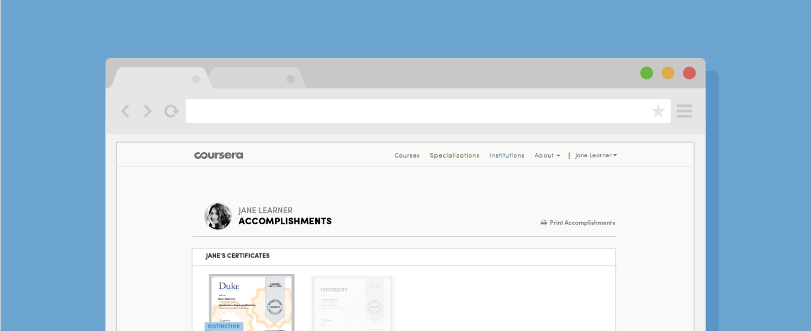
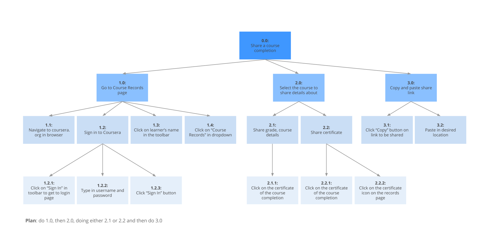
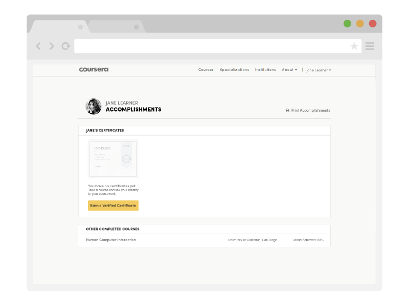
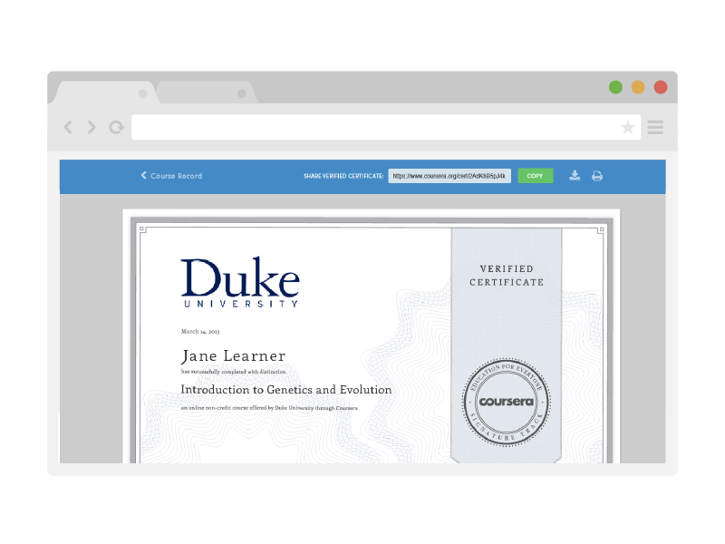
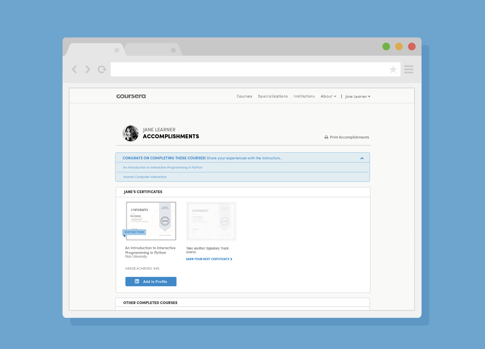
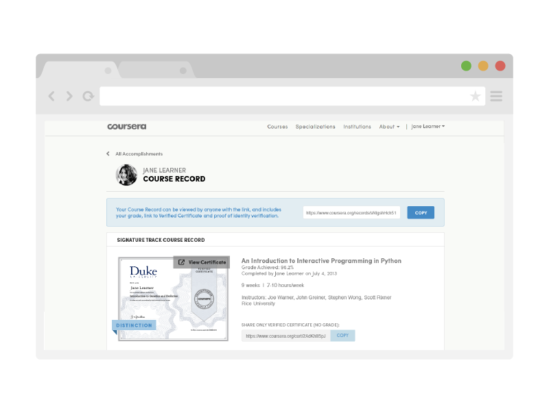
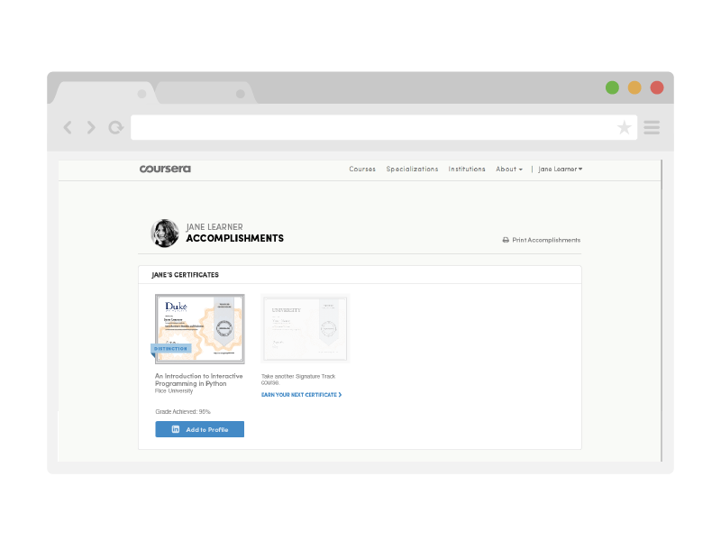

Coursera
Providing verifiable, universally-accessible education

links: InVision Mockup, Accomplishments
Role
I did two internships at Coursera in a hybrid product design/front-end engineering role on the Monetization team. I got down with data, crafted user experiences, and wrote reusable front-end components in React.
Problem
Learners needed a way to view the courses they completed on Coursera, and to be provided credential value to the certificates they achieved. For a large portion of learners, they earned their first ever educational credential on our platform.
We also wanted to increase the credential value of Coursera's certificates, so we could help learners' achievements be more widely recognized as a form of education and training that didn't need to be from a traditional brick-and-mortar institution.
On top of that, learners found it difficult to differentiate the types of courses we offered, and the levels of certification associated with them.
User mindset and motivation
- Completed a course, want to review their achievement
- Exploratory - "What is this 'Accomplishments' doo-hicky?!"
Key tasks they want to complete:
- See their completed courses
- Access the artifacts stored from the courses they've completed
- Share their accomplishments with employers (current or potential) - this has high value based on user testing
Emotional pay-off
- What would a user say when everything went well? About their own Accomplishments?
- "I'm proud of all of my accomplishments"
- "I wish I had more accomplishments to display"
- What might they say about Coursera?
- "Coursera offers credentials I can share with others in ways I wouldn't with a traditional education"
- "Coursera is easy to use and convenient"
- What should we anticipate they would want to do right after this?
- Sign-up for additional courses
- Share their certificate or course record
Existing Solution
Prior to the redesign, learners had the capability of sharing their course completions, but many learners were not aware that they were able to do this. The following diagram shows the flow of the pages in existence, and how they were accessed. Views labeled "shareable" notes that these custom pages could be viewed by anyone with the URL.

Here's an original task analysis of the decided flow of sharing a course completion with someone else, say and employer (current or potential):

Breaking down the task hierarchy of the Accomplishments pages.
Based on the task analysis, we found it possible to simplify the flow into four views - combining the Course Record and Verification pages, as shown in the below diagram:

User Testing
With a high-fidelity mockup inVision mockup, we performed user testing through UserTesting.com with five participants, as well as two participants internally to gauge directional feedback and pain points in the design. Here's what we found:
- Participants referred to the page colloquially as their "Profile", suggesting that it would be worth exploring the expansion of this page to be a social profile
- Participants intuitively clicked on certificate thumbnails to find what they were looking for, as opposed to text links
- They emphasized the value of LinkedIn sharing in their verbal feedback
- Participants found that the section that stated "Other Completed Courses" lacked detail in comparison to their Verified Certificate courses
- There was confusion around the number of shareable URLs and where they were placed
From prior A/B tests that we ran across the site's paid products, we also found that learners were motivated by the idea of linking their identity to their learning, which influenced the voice behind some of the copy in the Accomplishments page.
Accomplishments - Main
Throughout the Accomplishments pages, we wanted to give the learner a feeling of ownership of the pages, so we added a header section with their name and photo - with room to grow as Coursera becomes more of a social learning platform. Additionally, although the pages were originally titled "Course Records", we chose to change the vocabulary to "Accomplishments" because that's what they were - we wanted to make a space that learners could share what they achieved on Coursera and felt proud while doing so.
The Accomplishments page has different states depending on the types of courses the learner has completed.
The image below shows a state where the learner has completed a free course, but has not yet purchased a Verified Certificate course. A "ghost state" Certificate is shown with a link prompting to the catalogue of Certificate-eligible courses.

The next image displays a state where a learner has earned one Verified Certificate. Their achievement is highlighted by a thumbnail of their certificate, a ribbon indicating Distinction if they have achieved it, and a call-to-action to post their achievement to LinkedIn. A secondary call-to-action exists, again, in the form of a ghost-state Certificate to prompt the learner to keep earning and fill up the space.

The following state shows one with a "Quick Questions" prompt at the top of the page - a feature built out by the University Product team to gauge feedback from learners after they have completed a course. The prompt would be displayed the first time a learner accesses their Accomplishments page after finishing a course.

Course Record
The Course Record page is the detailed view of a course completion after a user clicks on the certificate thumbnail in the Accomplishments view. Its practicality exists in providing a link to the full-sized Certificate, as well as a detailed description of the course, which learners appreciated having, since it's not offered on the Certificate itself. When the learner is logged in, she'll see fields to copy the links to the Course Record and Certificate, in order to share them. In the previous Course Records pages, learners often had no idea that they were able to share these pages publicly - they thought it was just contained within their account.

Certificate
Finally, the Certificate view features the PDF certificate contained within a browser viewer with a toolbar with explicit calls-to-action. The toolbar features a copy link to the Certificate for the learner to share their certificate, as well as a print link. We found from user research that although learners in some nations found the Certificate artifact not as important, there were learners in other parts of the world who had never received formal education, and for them, this was their only form of certification. As a result, providing them actions for using and sharing the Certificate was still a high priority.

Implementation
I worked on implementing most of the styling using the Bootstrap framework, Stylus and Jade. I also worked on some of the front-end logic which involved Backbone.js and our course catalog API.
To see these pages live and in action, login or create an account on Coursera, and head to your Accomplishments.
Credential Value
After shipping the Accomplishments section, we saw a significant increase in the number of people adding their certification to their Linkedin profiles. In May 2015, LinkedIn reported Coursera to be the 2nd top credential provider on their platform!

Further Inquiries
Although I left this project after my internship ended, I had unanswered questions about the real value of online credentials. I wondered if eventually the Accomplishments section would just become one module of a public-facing learner profile, that didn't only rely on certificates as proof of completion, but of projects, demos and examples of flipped classroom learning.